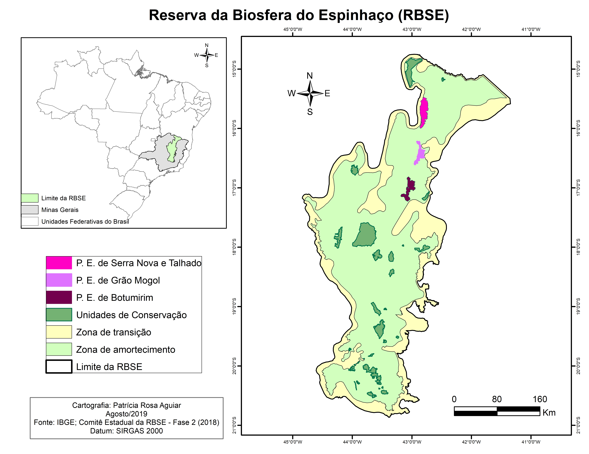

Serra do Espinhaço
Explore a riqueza natural de Minas Gerais em uma jornada pelos Parques Estaduais de Botumirim, Grão Mogol, Serra Nova e o encantador destino de Talhado. Descubra paisagens deslumbrantes, biodiversidade exuberante e trilhas repletas de aventura. Cachoeiras cristalinas, formações rochosas imponentes e fauna diversificada aguardam por você. Esses parques oferecem uma oportunidade única de conexão com a natureza e momentos inesquecíveis.

Parque Estadual Botumirim

Parque Estadual Grão-Mogol

Parque Estadual Serra Nova e Talhado
Sobre a tese
A pesquisa teve como objetivo geral analisar os potenciais científico, didático e turístico das unidades de conservação Parque Estadual de Grão-Mogol, Parque Estadual de Serra Nova e Talhado e Parque Estadual de Botumirim. As UC pesquisadas encontram-se localizada na região identificada como “Espinhaço Setentrional”, sendo considerada uma das áreas prioritárias para conservação da biodiversidade de Minas Gerais.